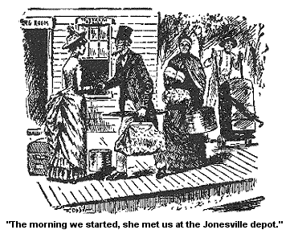

ARDELIA AND ABRAM GEE.
Wall, I don't s'pose there had been a teacher in our deestrict for years and years that gin' better satisfaction than Ardelia Tutt. Good soft little creeter, the scholars any one of 'em felt above hurtin' on her or plagin' her any way. She sort a made 'em feel they had to take care on her, she wuz so sort a helpless actin', and good natured, and yet her learnin' wuz good, fust-rate.
Yes, Ardelia was thought a sight on in Jonesville by scholars and parents and some that wuzn't parents. One young chap in perticiler, Abram Gee by name, who had just started a baker's shop in Jonesville, he fell so deep in love with her from the very start that I pitied him from about the bottom of my heart. It wuz at our house that he fell.
The young folks of our meetin'-house had a sort of a evenin' meetin' there to see about raisin' some money for the help of the steeple -- repairin' of it. Abram is a member, and so is Ardelia, and I see the hull thing. I see him totter and I see him fall. And prostrate he wuz, from that first night. Never was there a feller that fell in love deeper, or lay more helpless. And Ardelia liked him, that wuz plain to see; at fust as I watched and see him totter, I thought she wuz a sort o' wobblin' too, and when he fell deep, deep in love, I looked to see her a follerin' on. But Ardelia, as soft as she wuz, had an element of strength. She wuz ambitious. She liked Abram, but she had read novels a good deal, and she had for years been lookin' for a prince to come a ridin' up to their dooryard in disguise with a crown on under his hat, and woo her to be his bride.
And so she braced herself against the sweet influence of love and it wuz tuff -- I could see for myself that it wuz, when she had laid out to set on a throne by the side of a prince, he a holdin' his father's scepter in his hand -- to descend from that elevation and wed a husband who wuz a moulder of bread, with a rollin' pin in his hand. It wuz tuff for Ardelia; I could see right through her mind (it wuzn't a great distance to see), and I could see jest how a conflict wuz a goin' on between love and ambition.
But Abram had my best wishes, for he wuz a boy I had always liked. The Gees had lived neighbor to us for years. He wuz a good creeter and his bread wuz delicious (milk emptin's). He wuz a sort of a hard, sound lookin' chap, and she, bein' so oncommon soft, the contrast kinder sot each other off and made 'em look well together.
He had a house and lot all paid for, with no incumbrances only a mortgage of 150 dollars and a lame mother. But he laid out to clear off the mortgage this year, and I wuz told that mother Gee wuz a goin' to live with her daughter Susan, who had jest come into a big property -- as much as 700 dollars worth of land, besides cows, 2 heads of cow, and one head of a calf.
I knew Mother Gee and she wuz goin' to stay with Abram till he got married and then she wuz goin' to live with Susan. And I s'pose it is so. She is a likely old woman with a milk leg.
Wall, Abram paid Ardelia lots of attention, sech as walkin' home with her from protracted meetin's nights, and lookin' at her durin' the meetin's more protracted than the meetin's wuz fur. And 3 times he sent her a plate of riz biscuit sweetened, sweetened too sweet almost, he went too fur in this and I see it.
Yes, he done his part as well as his condition would let him, paralyzed by his feelin's -- but she acted kinder offish, and I see that sonthin' wuz in the way. I mistrusted at first, it might be Abram's incumbrance, but durin' a conversation I had with her, I see I wuz in the wrong on't. And I could see plain, though some couldn't, that she liked Abram as she did her eyes. Somebody run him down a little one day before me and she sprouted right up and took his part voyalent. I could see her feelin's towards him though she wouldn't own up to 'em. But one day she came out plain to me and lamented his condition in life. Somebody had attact her that day before me about marryin' of him -- and she owned up to me, that she had laid out to marry somebody to elevate her. Some one with a grand pure mission in life.
And I spoke right up and sez, "Why bread is jest as pure and innocent as anything can be, you won't find anything wicked about good yeast bread, nor," sez I, cordially, "in milk risin', if it is made proper."
But she said she preferred a occupation that wuz risin', and noble, and that made a man necessary and helpful to the masses.
And I sez agin -- "Good land! the masses have got to eat. And I guess you starve the masses a spell and they'll think that good bread is as necessary and helpful to 'em as anything can be. And as fer its bein' a risin' occupation, why," sez I, "it is stiddy risen' -- risin' in the mornin,' and risin' at night, and all night, both hop and milk emptin's. Why," sez I, "I never see a occupation so risin' as his'n is, both milk and hop." But she wouldn't seem to give in and encourage him much only by spells.
And then Abram didn't take the right way with her. I see he wuz a goin' just the wrong way to win a woman's love. For his love, his great honest love for her made him abject, he groveled at her feet, loved to grovel.
I told him, for he confided in me from the first on't and bewailed her coldness to me, I told him to sprout up and act as if he had some will of his own and some independent life of his own. Sez I, "Any woman that sees a man a layin' around under her feet will be tempted to step on him," sez I. "I don't see how she can help it, if she calcerlates to get round any, and walk." Sez I, "Sprout up and be somebody. She is a good little creeter, but no better than you are, Abram; be a man."
And he would try to be. I could see him try. But one of her soft little glances, specially if it wuz kind and tender to him, es it wuz a good deal of the time, why it would just overthrow him ag'in. He would collapse and become nothin' ag'in, before her. Why I have hearn him sing that old him, a lookin' right at Ardelia stiddy:
"Oh to be nothin', nothin'!"
And thinks I to myself, "if this keeps on, you are in a fairway to git your wish."
He wuz a good singer, a beartone, and she a secent. They loved to sing together. They needed some air, but then they got along without it; and it sounded quite well, though rather low and deep.
Wall, it run along for weeks and weeks, he with his hopes a risin' up sometimes like his yeast and then bein' pounded down ag'in like his bread, under the hard knuckles of a woman's capricious cruelty. For I must say that she did, for sech a soft littte creeter, have cold and cruel ways to Abram. (But I s'pose it wuz when she got to thinkin' about the Prince, or some other genteel lover.)
But her real feelin's would break out once in a while, and lift him up to the 3d heaven of happiness and then he'd have to totter and fall down ag'in. Abram Gee had a hard time on't. I pitied him from nearly the bottom of my heart. But I still kep' a thinkin' it would turn out well in the end. For it wuz jest about this time that I happened to find this poetry in a book where she had, I s'posed, left it. And I read 'em, almost entirely unbeknown to myself.
It wuz wrote in a dreatful blind way but I recognized it at once. I looked right through it, and see what she wuz a writin' about though many wouldn't, it wuz wrote in sech a deep style.
"STANZAS ON BREAD;
" or
" A LAY OF A BROKEN HEART.
"Oh Bread, dear Bread, that seemest to us so cold,
Oft'times concealed thee within, may be a sting!
Sweet buried hopes may in thy crust be rolled;
A sad, burnt crust of deepest suffering.
"There are some griefs the female soul don't tell,
And she may weep, and she may wretched be;
Though she may like the name of Abram well
And she may not like dislike the name of G-,
"Oh Fel Ambition, how thou lurest us on,
How by thy high, bold torch we're stridin' led:
Thou lurest us up, cold mountain top upon,
And seated by us there, thou scoffest at bread.
"Thou lookest down, Ambition, on the ovens brim;
Thou brookest not a word of him save with contumalee:
And yet, wert thou afar, how sweet to set by him
And cut low slices of sweet joy with G-,
"Oh! Fel Ambition, wert but thou away,
Could we thy hauntin' form no more, nor see;
How sweet 'twould be to linger on with A-,
How sweet 'twould be to dwell for aye with G-."
Wall, as I say, she gin good satisfaction in the deestrict and I declare for it, I got to likin' her dretful well before the winter wuz over. Softer she wuz, and had to be, than any fuz that was ever on any cotton flannel fur or near. And more verses she wrote than wuz good for her, or for anybody else, -- Why she would write "Lines on the Tongs," or "Stanzas on the Salt Suller," if she couldn't do any better; it beats all! And then she would read 'em to me to get my idees on 'em. Why I had to call on every martyr in the hull string of martyrs sometimes to keep myself from tellin' her my full mind about 'em unbeknown to me. For, if I had, it would have skairt the soft little creeter out of what little wit she had.
So I kep' middlin' still, and see it go on. For she wuz a good little soul, affectionate and kinder helpful. A good creeter now to find your speks. Why she found 'em for me times out of number, and I got real attached to her and visey versey. And when she came a visitin' me in the spring (at my request), and I happened to mention that Josiah and me laid out to go to Saratoga for the summer, what did the soft little creeter want to do but to go too. Her father was well off and wuz able to send her, and she had relatives there on her own side, some of the Pixleys, so her board wouldn't cost nothin'. So it didn't look nothin' unreasonable, though whether I could get her there and back without her mashin' all down on my hands, like a over ripe peach, she wuz that soft, wuz a question that hanted me, and so I told Josiah.
But Josiah kinder likes young girls (nothin' light; a calm meetin'-house affection), it is kinder nater that he should, and he sez: "Better let her go, she won't make much trouble."
"No," sez I, "not to you, but if you had to set for hours and hours and hear her verses read to you on every subject -- on heaven, and earth, and the seas, and see her a measurin' of it with a stick to get the lines the right length; if you had to go through all this, mebby you would meditate on the subject before you took it for a summer's job."
" Wall," sez he, "mebby she won't write so much when she gets started; she will be kinder jogged round and stirred up in body and mebby her feelins' will kinder rest. I shouldn't wonder a mite if they did," sez he. "And then she can take a good many steps for you, and I love to see you favored," sez he.
He wanted her to go, I see that, and I see that it wuz natur that he should, and so I consented in my mind -- after a parlay.
She found his specks a sight and his hat. Nothin' seemed to please her better than to be gropin' round after things to please somebody; her disposition wuz such. So it wuz settled that she should accompany and go with us. And the mornin' we started she met us at the Jonesville Depot in good sperits and a barege delaine dress, cream color, and a hat of the same.

I hadn't seen her for some weeks, and she seemed softly tickled to see Josiah and me, and asked a good many questions about Jonesville, kinder turnin' the conversation gradually round onto bread, as I could see. So I branched right out, knowin' what she wanted of me, and told her plain, that "Abram Gee wuz a lookin' kinder mauger. But doin' his duty stiddy," sez I, lookin' keenly at her, "a doin' his duty by everybody, and beloved by everybody, him and his bread too."
She turned her head away and kinder sithed, and I guess it wuz as much as a quarter of a hour after that, that I see her take out a pencil and a piece of paper out of her portmonny, and a little stick, and she went to makin' some verses, a measurin' 'em careful as she wrote 'em, and when she handed 'em to me they wuz named
"A LAY ON A CAR;
" or
"THE LESSON OF A LOCOMOTIVE."
After I had read it and handed it back to her, she sez, "Don't you think I improve on the melody and rhythm of my poetry? I take this little stick with me now wherever I go, and measure my lines by it. They are jest of a length, I am very particular; you know you advised me to be."
"Yes," sez I mechaniklly, "but I didn't mean jest that." Sez I, "the poetry I wuz a thinkin' on, is measured by the soul, the enraptured throb of heart and brain; it don't need takin' a stick to it. Howsumever," sez I, for I see she looked sort a disapinted, "howsumever, if you have measured 'em, they are probable about the same length: it is a good sound stick, I haint no doubt;" and I kinder sithed.
And she sez, "What do you think of the first verse? Haint that verse as true as fate, or sadness, or anything else you know of?"
"Oh yes," sez I candidly, "yes; if the cars run backwards we shouldn't go on; that is true as anything can be. But if I wuz in your place, Ardelia," sez I, "I wouldn't write any more to-day. It is a kind of muggy damp day. It is a awfully bad day for poetry to-day. And," sez I, to get her mind offen it, "Have you seen anything of my companion's specks?"
And that took her mind offen poetry and she went a huntin' for 'em, on the seat and under the seat. She hunted truly high and low and at last she found 'em on my pardner's foretop, the last place any of us thought of lookin'. And she never said another word about poetry, or any other trouble, nor I nuther.